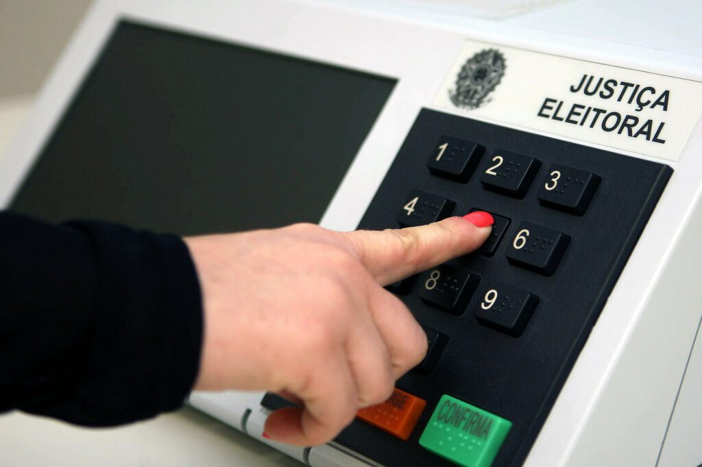

|
Bem-Vindo ao site das Eleições Piauí 2022
As Eleições Gerais Brasileiras consistem em eleições realizadas simultaneamente em todo o país para eleger o
presidente e o vice-presidente da República, os governadores e seus vices, senadores, deputados federais e estaduais.
No Brasil, as eleições são realizadas por meio das urnas eletrônicas, que é o equipamento que registra os votos dos
eleitores brasileiros durante as eleições, o que permite que a apuração dos resultados seja rápida, precisa e confiável.
A cada pleito, o Tribunal Superior Eleitoral torna público os dados dos boletins das urnas eletrônicas que
registram, entre outras informações, a totalização dos votos depositados em cada equipamento. Se quiser saber o resultado por candidato, município, cargo ou geral, escolha uma dessas opções
no canto superior direito da tela.
|
 |